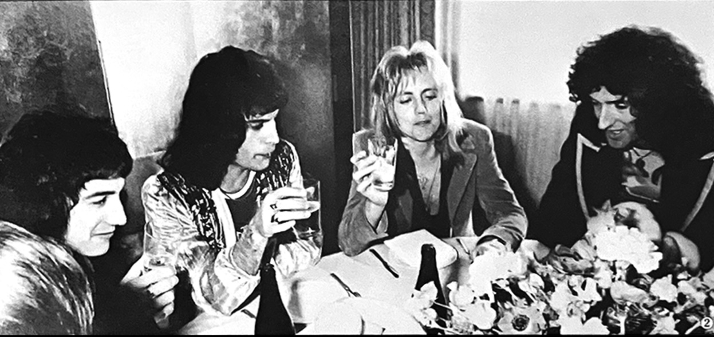

Interview with the Tokyo Patrol
Four bodyguards accompanied Queen around the clock: Itami (Freddie), Chiba (Roger), Oki (Brian), and Yamada (John)!Queen's trust in them is absolute. We asked these four samurai to tell us about the appeal of Queen firsthand.

Itami: That's right! When Freddie went out shopping he'd leave his wallet with us. He'd say, "I'll leave the money to you!" It was really touching.
QFC: Shopping! What did they buy?
Itami: Freddie bought a lot of traditional Japanese items, like kimono, hakata dolls, and vases.
Yamada: John bought a few prints.
QFC: Whenever they come to Japan, it seems that they all try to absorb the culture. What kind of food did they like?
Oki: I think they actually preferred Western food mostly, but when we went to Roppongi to eat a Japanese meal, the wakame salad was a hit! They kept talking about how delicious it was and asked for seconds and thirds even though they felt sick! (laughs)
Chiba: The sake was also a big hit. Everyone drank it!
QFC: What types of things did they enjoy doing?
Oki: Brian received a traditional Japanese toy, a top, from a fan, and was eager to learn how to spin it properly.
Itami: They all played oshikura manju with me and I never lost! Then they said, "Itami is only strong because he has such short legs"! (laughs)
QFC: What made them happiest?
Itami: Hmmm, well, we went out drinking in Roppongi once, I forget the name of the place we went to, but it was a small izakaya-style place. They really had a great time there!
Chiba: That's right! Roger got up and played drums for the house band.
Oki: Usually the band is being asked for an encore, but that night they were the ones calling for an encore! (laughs) We all sang along together. I think it was the night of April 1st.
QFC: Didn't John go?
Yamada No, he didn't. He was planning to go, but the driver got lost! (laughs) He ended up drinking alone in the hotel bar to drown his sorrows!
QFC: What did you think of the Japanese girl fans?
Itami: They were very passionate.
QFC: Did you ever find yourself in a jam?
Itame: When we went shopping in Kyushu, the roads were absolutely packed with female fans and we couldn't get through. Everyone was desperate to catch a glimpse of the band! I was in a panic but there wasn't much one person could do.
QFC: What did you do in that situation?
Itami: Well, since I was dealing with young girls, I couldn't really get angry with them, you know. So it was a difficult situation. But they were all very understanding once I explained things to them gently. It was kind of like being a schoolteacher! (laughs)
QFC: What did Queen think of the fans?
Oki: Brian was very conscientious. A lot of fans this time around asked, "You signed a lot of autographs for us last year, why aren't you doing it this year?" But apparently, he was bound by the production company contract—it stipulated that he couldn't sign as many autographs as he wanted to. He was not very happy about that.
Itami: They would say, "We're so happy you're supporting us, but please don't follow us around the hotel or call up to our rooms. What you can do for us is listen to and understand our music".
QFC: Finally, can you give us your snap impressions of Queen?
Itami: Freddie was born in the same year and month as me, but I feel like he's far more charismatic than I'll ever be. He has a tremendous passion for music, and I think he'll only continue to grow as a musician. I can see why young girls go crazy for him!
Oki: I'd heard that Brian was a nervous fellow, but he's surprisingly cheerful. I don't think he's anxious for himself, but rather for other people. In any event, he was incredibly concerned for both me and his fans. He's a very considerate person.
Chiba: Roger was a cheerful person who was happy to chat with just about anyone. What impressed me the most about him was that even when something unpleasant happened, he never let it show on his face.
Yamada: John was always smiling and good-natured, and seemed kind of innocent and gullible. But when it came time to play music, his countenance changed and he became really enthusiastic.
The bodyguards all took time out of their busy schedules to answer our questions wholeheartedly! Unlike when they're on duty, they were smiling the whole time. They're almost like kind older brothers. It was all thanks to them that no problems arose and Queen was able to concentrate on giving their shows without worry. Our thanks to them for all of their hard work!